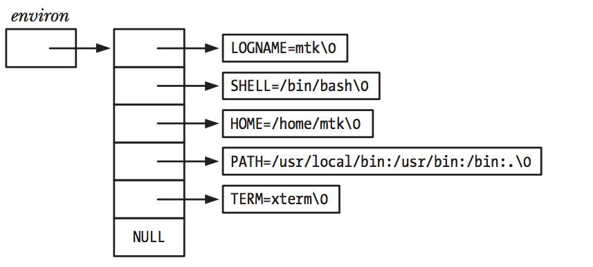

Linux环境变量
Contents
说起linux环境变量，大家都不陌生，但最近在面试过程中，发现大家对其理解的还不是很准确，本文想专门对环境变量进行一些深入的介绍。
什么是环境变量？
什么是环境变量？回答这个问题，大家一定要清晰，环境变量是针对进程的。环境变量是与进程相关联的一组字符串。这些字符串的格式一般为name=value格式的，因此，环境变量可以包含任何信息。
当创建一个进程时，它会继承从其父进程的环境变量，当然，这也是最原始的且最常用的进程间通讯方式——父进程将信息通过环境变量传递给子进程，而且只有在创建进程时，传递一次，且只能通过父进程传递给子进程。
当进程创建成功后，进程只能修改自己的环境变量，且环境变量的修改不能被其他进程所见。
环境变量用处
- 最常见的使用环境变量是
shell执行环境。设置好shell的环境变量后，shell会将这些变量传递给它创建的子进程。 - 另外一些函数库会根据环境变量的不同来改变它们的行为。
设置shell环境变量的方式
一般情况下可以使用如下的方式设置shell的环境变量：
root@localhost ~# # Create a shell variable
root@localhost ~# NAME=VALUE
root@localhost ~# # Put variable into shell process's environment
root@localhost ~# export NAME
也可以使用如下的简写方式：
root@localhost ~# export NAME=VALUE
此后，当在shell中执行程序时，NAME=VALUE就会传递给子进程。
直接传递环境变量给子进程
我们也可以不通过修改shell的环境变量，直接将环境变量传递给子进程：
root@localhost ~# NAME=VALUE program
查看当前shell的环境变量
可以使用命令printenv或者env来查看当前shell的环境变量：
root@localhost ~# printenv
NAME=VALUE
HISTFILESIZE=10000
USER=root
MAIL=/var/spool/mail/root
PATH=/root/bin:/usr/local/sbin:/usr/local/bin:/usr/sbin:/usr/bin:/usr/local/go/bin:/root/work/go/bin:/root/bin
PWD=/root
LANG=en_US.UTF-8
HISTCONTROL=ignoredups
SHLVL=1
HISTTIMEFORMAT=%Y/%m/%d %T
_=/usr/bin/printenv
root@localhost ~# env
NAME=VALUE
HISTFILESIZE=10000
USER=root
MAIL=/var/spool/mail/root
PATH=/root/bin:/usr/local/sbin:/usr/local/bin:/usr/sbin:/usr/bin:/usr/local/go/bin:/root/work/go/bin:/root/bin
PWD=/root
LANG=en_US.UTF-8
HISTCONTROL=ignoredups
SHLVL=1
HISTTIMEFORMAT=%Y/%m/%d %T
_=/usr/bin/printenv
查看进程的环境变量
environ
在c程序中，环境变量列表可以通过全局变量char **environ来查看，下图展示了全局变量char **environ数据结构：

所以，printenv的简单实现如下：
#include <stdio.h>
#include <stdlib.h>
extern char **environ;
int main(int argc, char *argv[])
{
char **ep;
for (ep = environ; *ep != NULL; ep++)
printf("%s\n", *ep);
exit(EXIT_SUCCESS);
}
/proc/PID/environ
在linux系统中，我们可以通过/proc/PID/environ文件来查看一个进程的环境变量。
注意：
/proc/PID/environ中包含的环境变量只包含进程创建时刻由父进程传递的，不包括后续由进程自己设置的环境变量。
root@localhost ~ # cat -v /proc/1184/environ
LANG=en_US.UTF-8^@PATH=/usr/libexec/docker:/usr/bin:/usr/sbin^@NOTIFY_SOCKET=/run/systemd/notify^@GOTRACEBACK=crash^@DOCKER_HTTP_HOST_COMPAT=1^@OPTIONS=--ip-forward=false --selinux-enabled --log-driver=journald --signature-verification=false^@DOCKER_CERT_PATH=/etc/docker^@DOCKER_STORAGE_OPTIONS=--storage-driver overlay2 ^@DOCKER_NETWORK_OPTIONS=^@
进程操作环境变了的API
在C程序中，我们通过一下API来维护进程的环境变量：
内核中的环境变量保存的位置
在内核中，当进程创建时，保存环境变量的内存区域由mm_struct中的变量env_start和env_end标记。
struct mm_struct {
...
...
unsigned long start_code, end_code, start_data, end_data;
unsigned long start_brk, brk, start_stack;
unsigned long arg_start, arg_end, env_start, env_end;
...
...
}
此后，进程自己创建或者修改的环境变量，会申请新的内存区域来保存。而/proc/PID/environ是通过读取env_start和env_end指向的内存区域来得到环境变量。
总结
- 为了安全考虑，A程序不能修改B程序的环境变量
/proc/PID/environ不包含进程启动后创建和修改的环境变量